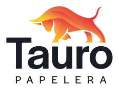
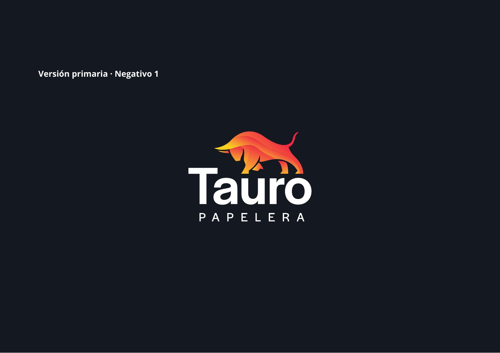
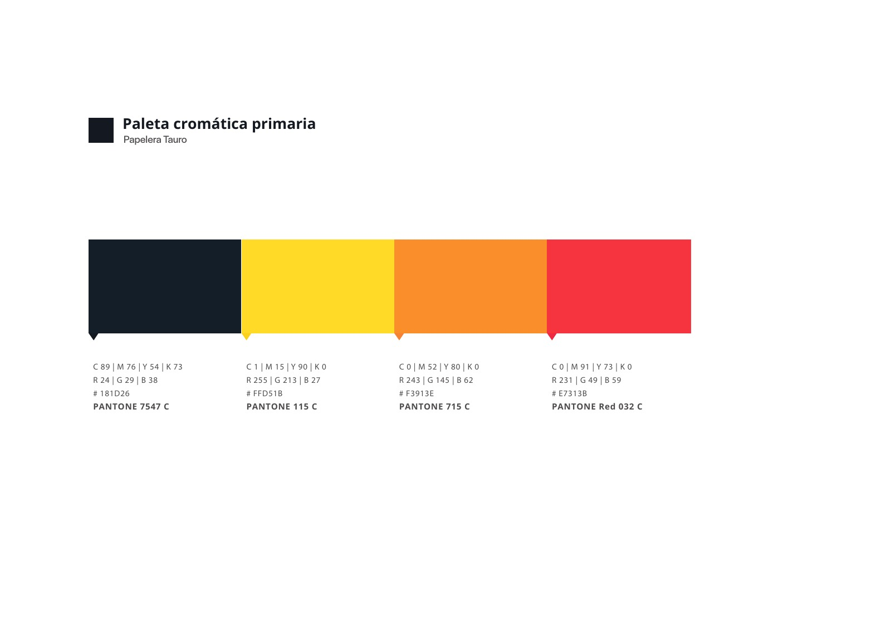
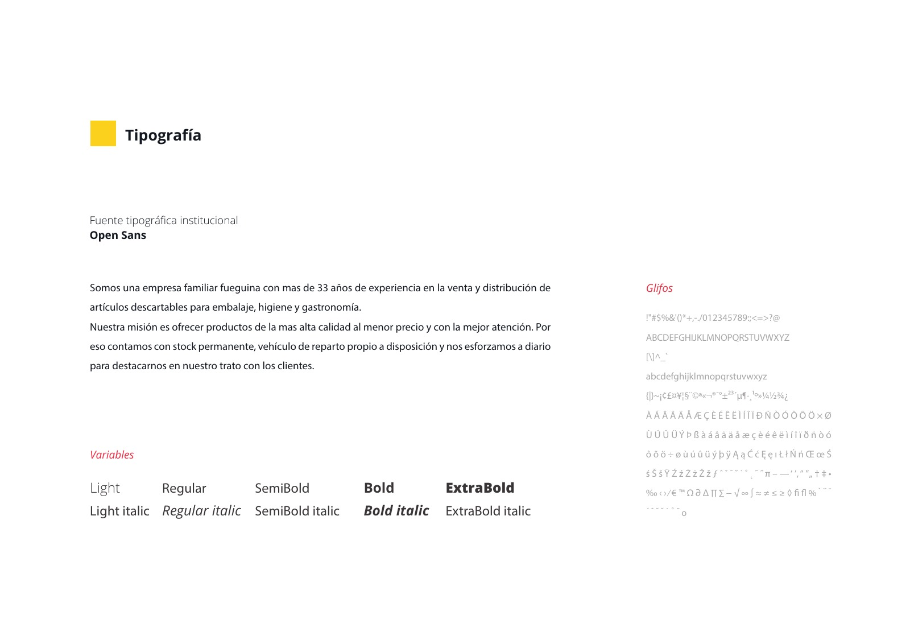
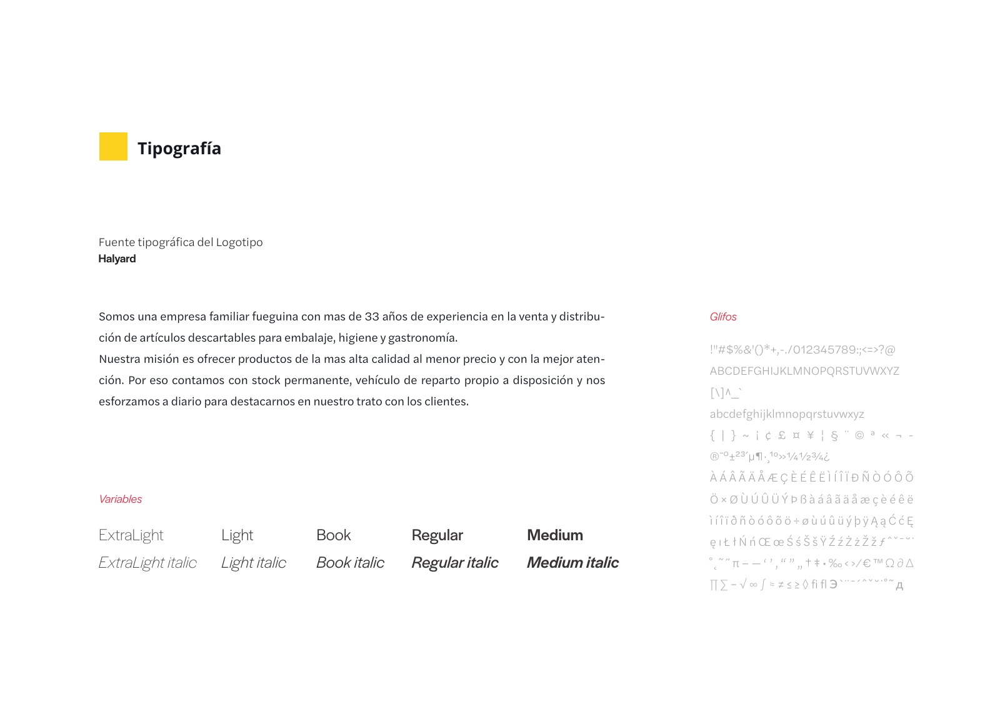
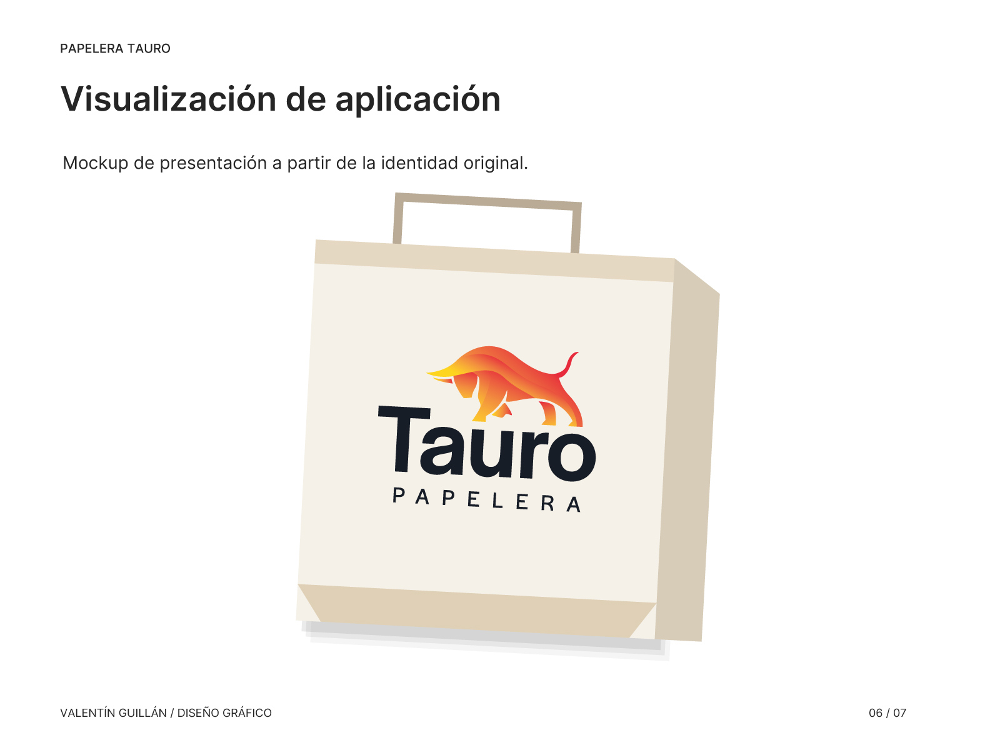

Identidad visual
Papelera Tauro
Identidad visual y aplicaciones gráficas para Papelera Tauro.
Explorar el proyecto
El proyecto
Identidad y aplicaciones
de una papelera.
Papelera Tauro se dedica a la venta y distribución de artículos descartables para embalaje, higiene y gastronomía. La selección presenta el identificador y recursos del manual original.
- Cliente
- Papelera Tauro
- Diseño
- Valentín Guillán
- Participación
- Diseño de identidad visual y aplicaciones gráficas
Desarrollo visual
Un identificador, distintas composiciones
Versión principal, configuración horizontal y aplicación sobre fondo oscuro.


Desarrollo visual
Color y degradado
Oscuro, amarillo, naranja y rojo; el toro conserva su degradado original.

Desarrollo visual
Open Sans y Halyard
Open Sans figura como tipografía institucional y Halyard como fuente del logotipo.


Desarrollo visual
Producto, información y firma
Aplicaciones digitales incluidas en el manual original.

Visualización de aplicación: Papelera Tauro

Participación y créditos
Papelera Tauro
Diseño de identidad visual y aplicaciones gráficas: Valentín Guillán.
Imagen de producto: incluida en el manual original.